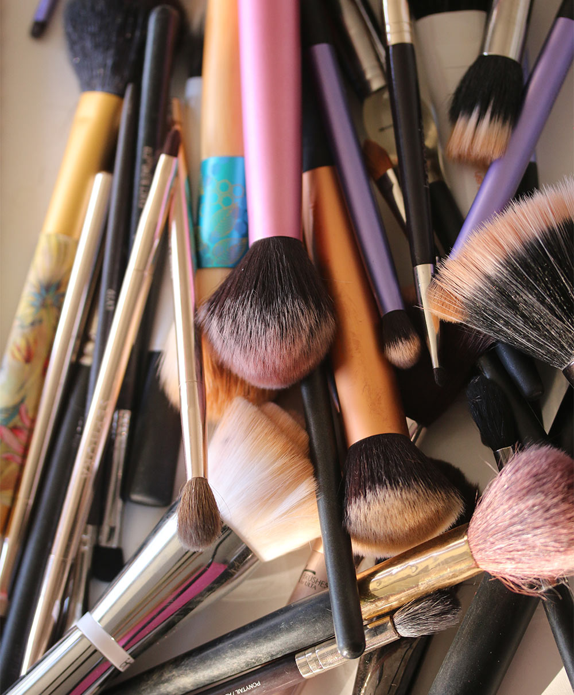

Really Important Things That I Think About When I’m Washing Makeup Brushes
I found a stash of Keurig coffee cups at the office. They’re squirreled away in a cabinet that’s supposed to contain stuff for everyone to use, but I don’t think most people would bother to check it. I wanna be a team player and tell my office mates about the stash, but I also want to have ALL THAT COFFEE to myself, ha ha ha!
Also, I really can’t hang with this rainy weather. I keep telling myself that longer days are just around the corner, but it’s been gray and dreary a lot here, and I just wanna feel the sun on my skin and be outside in warm, fresh air.
If you’re feeling the rain and wanna set a moody a vibe, though, FYI, I just discovered a really lovely rainy day song called “Glitter” by Patrick Droney. The perfect type of bittersweet song for a cozy afternoon.
Oh! At lunch today, I realized that “Trader Joe’s Salad Hacks” should totally be a thing. Today, I had their pre-packaged Pasadena salad, which is pretty good on its own (chopped romaine, slivered almonds, chicken, and the crunchy white bits you’d find in a Chinese chicken salad). But I found out it’s even better when you add a scoop of crispy chickpeas (highly recommend the Sea Salt flavor by Biena) and a scoop of hemp hearts. It was SUPER GOOD, and it held me over for hours.
Completely not related to salad at all, but I ran out of brow pencil a few days ago, and I’m contemplating going back to the Chanel Boy brow pencil I was using and loving a while back. I’ve been all doing old school Anastasia Brow Wiz for the last few months and it’s fine, I guess, but you know how it goes. One gets itchy to swap out the same-o-same-o for something different. At least I do, ha!
Speaking of Chanel, I’ve been thinking about their awesome red nail polishes because I saw a reel on Instagram where a gal talked about wearing short red nails for a whole year. A WHOLE YEAR!
Can you even imagine, in this day and age, with all the access to different colors that we have, doing short red nails for an entire year?
She made a good case for it, though, and said that it freed her up from spending any time having to make nail polish decisions, and that she always felt chic, and that red goes with most everything. I’m thinking of trying it, but I’m definitely not ready to commit to a whole year. Maybe three months? I’ve been slacking when it comes to manicures and hoping this will get me back in the groove.
What’s going on with you? I hope life is treating you well.
Your friendly neighborhood beauty addict,
Karen
Comments
John Smith: This is a great post! I really enjoyed reading it.
Jan 17, 2024
Jane Doe: Thank you for the insightful information!
Jan 18, 2024
Emily Johnson: I love how you described the content. It's very inspiring.
Jan 19, 2024
Leave a Comment